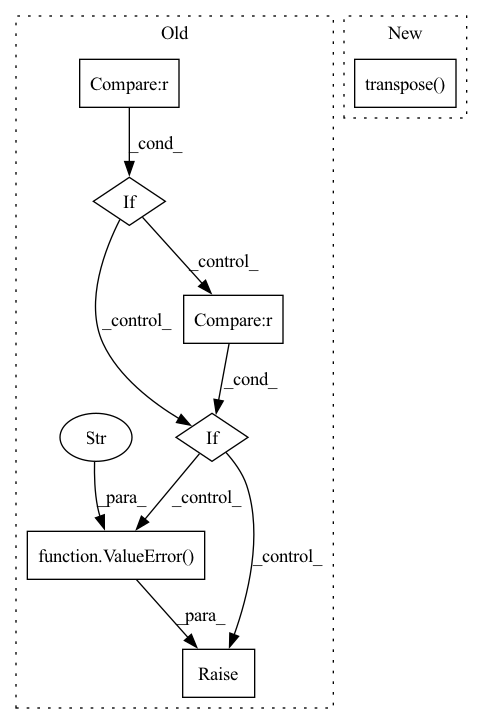

Pattern ID :11305
Before Change
// Pooling
// out: (BB, embedding_dim, NN)
if self._pooling_func_name == "max" :
out = torch.max(out, -1, keepdim=True)[0]
elif self._pooling_func_name == "mean":
out = torch.mean(out, keepdim=True, dim=-1)
elif self._pooling_func_name == "sum" :
out = torch.sum(out, keepdim=True, dim=-1)
else:
raise ValueError(f"Pooling function {self._pooling_func_name} is not yet supported!" )
// out: (BB, embedding_dim, 1)
out = torch.flatten(out, start_dim=-2)
After Change
// Pooling
// out: (BB, embedding_dim, NN)
masking_input = {"in_tensor": out.transpose( 2, 1) }
if self.use_masking:
masking_input["mask_tensor"] = masking_tensor
out = self.pooling_block(masking_input)["masking_out"]In pattern: SUPERPATTERN
Frequency: 3
Non-data size: 7
Instances Fragment ID: 38460810
Project Name: enlite-ai/maze
Commit Name: 53a9f4e4997b8a5451f14fb57dd6c5cb9becd110
Time: 2021-04-15
Author: office@enlite.ai
File Name: maze/perception/blocks/feed_forward/point_net.py
M Class Name: PointNetFeatureTransformNet
N Class Name: PointNetFeatureTransformNet
M Method Name: forward(3)
N Method Name: forward(2)
M Parent Class: nn.Module
N Parent Class: nn.Module
M File Name: maze/perception/blocks/feed_forward/point_net.py
N File Name: maze/perception/blocks/feed_forward/point_net.py
M Start Line: 93
M End Line: 127
N Start Line: 80
N End Line: 134
Before Change
def forward(self, x):
B, C, H, W = x.shape
if H != self.img_size[0] :
raise ValueError(f"PatchEmbed module. Input image height ({H}) doesn"t match model ({self.img_size[0]}).")
if W != self.img_size[1] :
raise ValueError(f"PatchEmbed module. Input image width ({W}) doesn"t match model ({self.img_size[1]})." )
x = self.proj(x)
if self.flatten:
x = x.flatten(2).transpose(1, 2) // BCHW -> BNC
x = self.norm(x)After Change
// FIXME look at relaxing size constraints
assert H == self.img_size[0] and W == self.img_size[1], \
f"Input image size ({H}*{W}) doesn"t match model ({self.img_size[0]}*{self.img_size[1]})."
x = self.proj(x).flatten(2).transpose( 1, 2) // B Ph*Pw C
if self.norm is not None:
x = self.norm(x)
return x Fragment ID: 38460811
Project Name: eora-ai/torchok
Commit Name: ab2534f05b48a529d03f8c28af2579245772f4e0
Time: 2022-07-11
Author: rashit.bayazitov.1995@gmail.com
File Name: src/models/modules/blocks/patch_embedding.py
M Class Name: PatchEmbed
N Class Name: PatchEmbed
M Method Name: forward(2)
N Method Name: forward(2)
M Parent Class: nn.Module
N Parent Class: nn.Module
M File Name: src/models/modules/blocks/patch_embedding.py
N File Name: src/models/modules/blocks/patch_embedding.py
M Start Line: 30
M End Line: 37
N Start Line: 50
N End Line: 55
Before Change
phot_sum[i] = np.sum(photons[ix], axis=0)
return pos_av, phot_sum
if self.mode == "coords" :
assert phot is not None
frame = self.psf.forward(x, phot).squeeze().numpy()
cluster_frame, _ = label(frame, self.kernel)
clusix = coord_2_cluster_ix(x.numpy(), self.corner, self.dist_thres, cluster_frame)
pos_clus, phot_clus = cluster_average(x.numpy(), phot.numpy(), clusix)
pos_clus, phot_clus = torch.from_numpy(pos_clus), torch.from_numpy(phot_clus)
Filter by photon threshold
ix_above_thres = phot_clus > self.phot_thres
return pos_clus[ix_above_thres, :], phot_clus[ix_above_thres]
elif self.mode == "frame" :
raise NotImplementedError("Not implemented.")
else:
raise ValueError("Wrong switch for mode of connected components." )
if __name__ == "__main__":
from sklearn.datasets.samples_generator import make_blobsAfter Change
clus_bool = cluster_frame >= 1
clus_ix = cluster_frame[clus_bool]
phot_in_clus = x_[clus_bool]
clus_mat_coord = np.asarray(np.asarray(clus_bool).nonzero()).transpose()
pos_clus, phot_clus = cluster_average(clus_mat_coord, phot_in_clus, clus_ix)
pos_clus, phot_clus = torch.from_numpy(pos_clus), torch.from_numpy(phot_clus)
Fragment ID: 38460813
Project Name: turagalab/decode
Commit Name: 5a56ef98b578b18514d42107cc6b8e92075fdbc7
Time: 2019-04-02
Author: gitdev@LRM.photo
File Name: deepsmlm/neuralfitter/post_processing.py
M Class Name: ConnectedComponents
N Class Name: ConnectedComponents
M Method Name: forward(2)
N Method Name: forward(3)
M Parent Class:
N Parent Class:
M File Name: deepsmlm/neuralfitter/post_processing.py
N File Name: deepsmlm/neuralfitter/post_processing.py
M Start Line: 123
M End Line: 176
N Start Line: 138
N End Line: 157